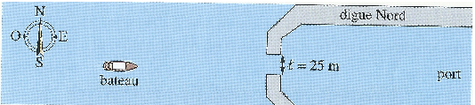
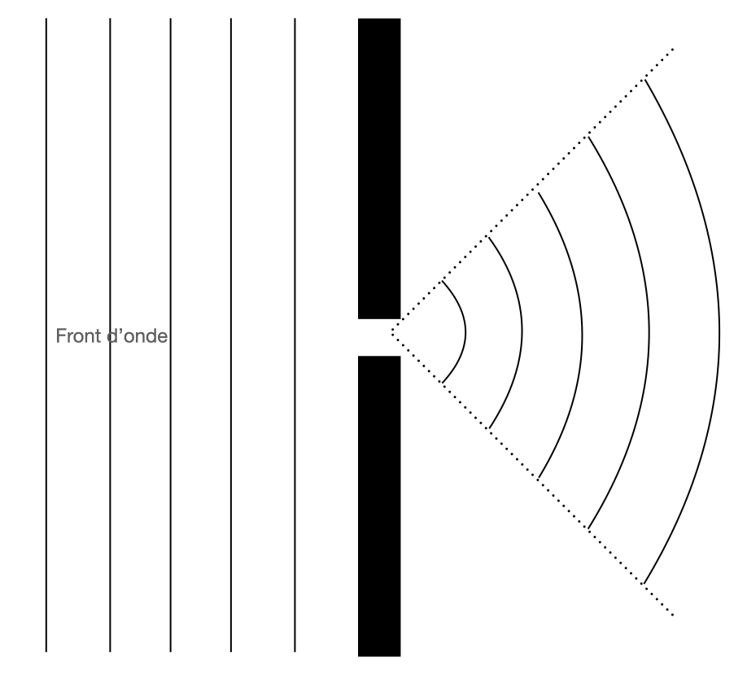

On modélise l’entrée d’un port comme sur le schéma ci-dessous :
Le port est séparé de la mer par deux digues. Une ouverture de largeur $L = \pu{25 m}$ permet aux bateaux d’y accéder.
La houle est assimilée à une onde mécanique progressive et sinusoïdale, arrivant de l’ouest vers le port. Elle soulève périodiquement le petit bateau situé au large de l’entrée du port.
La célérité $v$ d’une onde à la surface de l’eau dépend, entre autres, de la profondeur :
- Quand la profondeur $h$ de l’eau est très supérieure à la longueur d’onde $\lambda$, $v = \sqrt{ \dfrac{g \, \lambda}{2 \, \pi} }$ ;
- Quand la profondeur $h$ de l’eau est petite devant la longueur d’onde $\lambda$, $v = \sqrt{g \, h}$.
- Données
- Dans les relations précédentes, $g$ est l’accélération de la pesanteur et a pour valeur $g = \pu{9,8 m.s-2}$.
En mer
Le petit bateau de pêche est en mer au large du port. La profondeur de l’eau à cet endroit est $h = \pu{800 m}$. La longueur d’onde de la houle est $\lambda = \pu{50 m}$.
- Rappeler la définition d’une onde mécanique.
Réponse
Une onde mécanique est la propagation de la perturbation d’un milieu de proche en proche, sans transport de matière.
- La houle est-elle une onde mécanique transversale ou longitudinale ? Justifier la réponse.
Réponse
Le mouvement d’un bateau atteint par l’onde, à la surface de l’eau, est vertical. La houle (l’onde), elle, se déplace à la surface de l’eau, donc perpendiculairement au déplacement de ce bateau : c’est une onde transversale.
- Rappeler la définition d’une onde sinusoïdale.
Réponse
Une onde sinusoïdale est une onde créée par une source ayant un mouvement périodique sinusoïdal dans le temps.
- Rappeler les deux façons de définir la longueur d’onde.
Réponse
- La longueur d’onde est la période spatiale de l’onde : c’est la plus petite distance au bout de laquelle on retrouve le même état vibratoire dans le milieu.
- La longueur est la distance parcourue par l’onde pendant une durée égale à la période temporelle $T$.
- Justifier, par analyse dimensionnelle, que l’expression $\sqrt{ \dfrac{g \, \lambda}{2 \, \pi} }$ est bien homogène à une célérité.
Réponse
Remarque : $[ a ]$ signifie « dimension de $a$ ».
- $[\lambda] = L$. La longueur d’onde est une longueur.
- $[g] = \dfrac{L}{T^2}$. $g$ est une longueur divisée par un temps au carré. Remarque : vous serez bientôt capable de le démontrer, pour l’instant vous pouvez vous appuyer sur les unités.
- Donc $\left[ \sqrt{ \dfrac{g \, \lambda}{2 \, \pi} } \right] = \left[ \sqrt{ g \, \lambda } \right] = [g \, \lambda]^{1/2} = \left( L \times \dfrac{L}{T^2} \right)^{1/2} = \left( \dfrac{L^2}{T^2} \right)^{1/2} = \dfrac{L}{T}$. C’est bien une vitesse.
- Calculer la célérité de cette houle.
Réponse
- $h = \pu{800 m}$ et $\lambda = \pu{50 m}$, donc $h \gg \lambda$ et $v = \sqrt{ \dfrac{g \, \lambda}{2 \, \pi} }$.
- A.N. $v = \sqrt{ \dfrac{\pu{9,8 m.s-2} \times \pu{50 m}}{2 \, \pi} } = \pu{8,8 m.s-1}$.
- Calculer la fréquence du mouvement vertical du bateau.
Réponse
- Puisque la longueur d’onde est la distance parcourue par l’onde pendant la durée $T$, $\lambda = v T$. Puisque $T = \dfrac{1}{f}$, $\lambda = \dfrac{v}{f} \Leftrightarrow f = \dfrac{v}{\lambda}$.
- A.N. $f = \dfrac{ \pu{8,8 m.s-1} }{ \pu{50 m} } = \pu{0,18 Hz} $.
On dit qu’un milieu est dispersif lorsque la célérité d’une onde mécanique qui s’y propage dépend non seulement des caractéristiques du milieu mais aussi de la fréquence de cette onde.
- Quand la profondeur est grande devant $\lambda$, la mer est-elle un milieu de propagation dispersif pour la houle ? Même question quand la profondeur est petite.
Réponse
-
Quand la profondeur $h$ de l’eau est très supérieure à la longueur d’onde $\lambda$, $v = \sqrt{ \dfrac{g \, \lambda}{2 \, \pi} }$ .
On constate, dans cette expression, que la célérité de l’onde dépend de la longueur d’onde $\lambda$, donc de la fréquence $f$ de l’onde : le milieu est dispersif. -
Quand la profondeur $h$ de l’eau est petite devant la longueur d’onde $\lambda$, $v = \sqrt{g \, h}$.
On constate, dans cette expression, que la célérité de l’onde ne dépend pas de la longueur d’onde $\lambda$, donc de la fréquence $f$ de l’onde : le milieu n’est pas dispersif.
Près de la côte
Près de la plage, la profondeur devient petite devant la longueur d’onde de la houle.
- On considère la vague représentée sur la figure ci-dessous. Donner l’expression de la célérité de cette vague au point $A$ et celle au point $B$. En quel point la célérité est la plus grande ?
Réponse
- À l’approche du rivage la profondeur devient petite devant la longueur d’onde de la houle, donc $v = \sqrt{g \, h}$. La célérité est proportionnelle à $h^{1/2}$ ; c’est une fonction croissante de $h$.
- Puisque $H > h$, $v_A > v_B$.
- En déduire que cette vague se déforme et représenter, sur un schéma simple, l’allure de la « vague » quelques instants plus tard.
Réponse
La crête de la vague se déplace plus vite que la base, elle finit donc pas déferler puisqu’elle n’a alors plus d’« appui ».
À l’entrée du port
À l’entrée du port, la profondeur vaut $h = \pu{2,4 m}$ et on observe un phénomène de diffraction.
- Rappeler ce qu’est un phénomène de diffraction.
Réponse
La diffraction est la perturbation de la propagation d’une onde lorsque cette dernière rencontre un obstacle ou une ouverture.
- Donner l’ordre de grandeur de la longueur d’onde d’une houle qui serait diffractée par l’ouverture entre les digues.
Réponse
On sait que le phénomène de diffraction devient « visible » lorsque l’ouverture (ou l’obstacle) a une dimension du même ordre de grandeur que la longueur d’onde de l’onde (sinusoïdale), donc $\lambda \approx L = \pu{25 m}$.
- Calculer la célérité de cette onde.
Réponse
A.N. $v = \sqrt{\pu{9,8 m.s-2} \times \pu{2,4 m}} = \pu{4,8 m.s-1}$.
- Sur un schéma simplifié, représenter, en vue de dessus, l’entrée du port, la houle incidente et l’onde diffractée, en justifiant succinctement la forme des ondes.
Réponse
- L’ouverture se comporte comme une source secondaire vibrant à la même fréquence que la source primaire. La forme des fronts d’onde est donc modifiée.
- L’onde se propage avant et après l’ouverture dans le même milieu. Si ce dernier est non dispersif sa célérité est donc inchangée et puisque la source secondaire vibre à la même fréquence que la source primaire, la longueur d’onde est inchangée elle-aussi. Remarque : ce n’est pas tout à fait vrai dans cet exercice puisque la profondeur de l’eau varie et donc sa vitesse aussi.